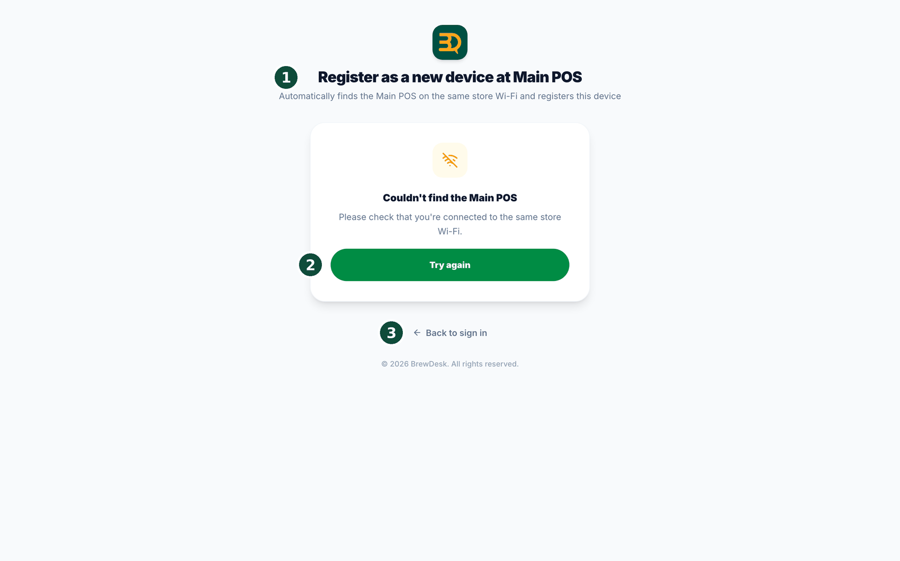
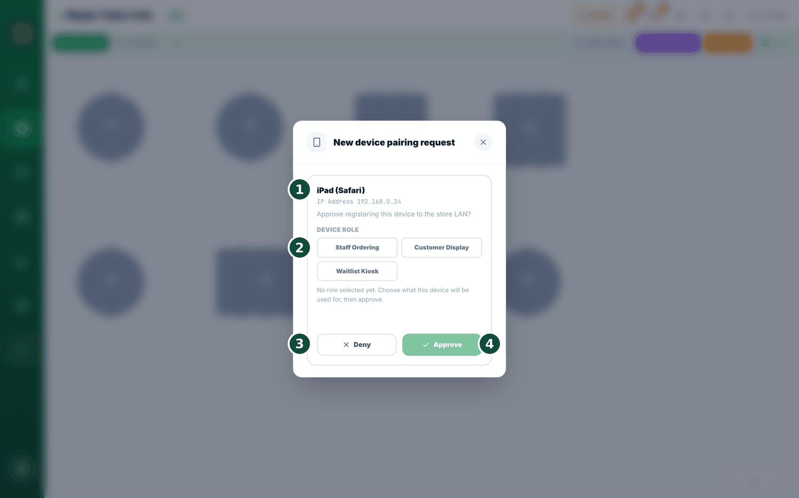

22Multiple devices & reliability
You can use more than one device at the same time. If one breaks, another one keeps your shop open. Let's set up your devices.

- Sign in with the owner's email on the devices that will be your main till and extra tills. Staff Ordering tablets, customer displays and waitlist kiosks don't use the owner's email sign-in — you approve them at the main till (Add a device to your main till).
- Give each device a job. Pick main till (your number-one device), extra till (a helper device), Staff Ordering, customer display (a screen for customers), or waitlist kiosk.
- Need to change a device's job later? Ask for the change on that device, then approve it at the main till (Change a device's job & check the link).
- You pick one device as your main till — it's your anchor. It does not hand off on its own. If it ever goes offline, BrewDesk alerts you at once so you can turn it back on or make another device the main till.
- See Device modes & customer display to set a device's mode, including Staff Ordering.
Settings › Devices, tap a device's name (or the little pencil next to it), type something like "Counter 1" or "Bar iPad", and save. You'll see "Device name updated." The name shows on every device, so you always know which tablet is which. Your tills that connect only over the shop network can't be renamed.Your till never dies. Spill a drink on it? Grab any laptop or tablet and you're back in minutes. No special machines, and you're never locked in.
Add a device to your main till
When you add a staff ordering tablet, a customer display, or a waitlist kiosk (self check-in) screen, your main till finds it for you. There is no code to type and no setting to hunt for. It even works when the shop has no internet.
The new device must have the BrewDesk app installed (iPad or desktop; the Android app is not available yet), and it must be on the same shop Wi-Fi as your main till. A page opened in a web browser can't be registered as a device — you'll see "Add devices from the BrewDesk app" instead.


- Open the BrewDesk app on the new device. On the sign-in screen, tap "Register as a new device at Main POS." If the device has no internet, it goes to this screen on its own.
- You'll see "Looking for Main POS..." and then the request is sent automatically. There is nothing more to tap on the new device — just leave it on "Waiting for approval at the Main POS."
- A popup called New device pairing request appears on your main till by itself. It shows which device asked, with its name and address.
- Under Device role, pick what this device is for — Staff Ordering, Customer Display, or Waitlist Kiosk (self check-in). The approve button stays off until you pick one.
- Tap Approve. If you don't recognise the device, tap Deny.
- The new device shows New device registration complete and goes straight into the job you picked for it.
On the main till, Settings › Devices now shows a How to add a device guide instead of register buttons — registering always starts on the new device.
Change a device's job & check the link
You can change what an already-paired device does, or check whether it's still talking to your main till.
- On a Staff Ordering device, tap the device mode icon ("Switch device mode") at the top of the screen.
- Change device role opens. You don't need a code again — this device is already registered.
- Pick the new job — Staff Ordering (take orders from any device), Customer Display (show orders to customers), or Waitlist Kiosk (self check-in for the waitlist).
- Nothing changes on the tablet yet. It says "Waiting for Main POS approval" — "Ask the owner to approve this change on the Main POS screen. Nothing has changed on this device yet."
- Go to your main till. A card pops up by itself, tagged "Role change — existing device": "This device is already registered and is asking to change its role. Approving changes what it does; its login is not affected." Tap Approve — or Deny if you didn't expect it. The tablet then switches.
- At the top of that window you'll see the link status. Connected to the main POS means all is well. No main POS connected means it hasn't found it yet — tap Check again.
- To remove this device completely, tap Log out & unregister at the bottom. It returns to the sign-in screen, and after signing back in you can choose its job from scratch.
When you hit the device limit
Your plan includes a certain number of tills and customer displays. When you reach that number, BrewDesk doesn't just refuse — it offers you a straight swap of one device for another.
Settings › Devices shows a warning strip at the top as soon as you reach the limit (not only when you go over it), counting what you're using — for example POS 1/1 and Customer display 1/1 on Pro, or POS 3/3 and Customer display 3/3 on Business. Each device also shows Last seen, so you can tell which one has been sitting in a drawer.
- Register the new till as usual. If you're at the limit you'll see "You've reached your plan's device limit. Replace an existing device, or upgrade your plan to add more."
- A Replace a device picker opens, listing the devices you could retire. Pick one.
- That's it — the old device is disconnected and the new one takes its place on the spot.
- Changed nothing on that list for a while? If the device you picked was already disconnected you'll see "That device was already disconnected, or this list is out of date — refreshing the list." Pick again from the fresh list.
On an iPad or the desktop app the wording is slightly shorter and points you to your BrewDesk account on the web to change your plan — the swap itself works exactly the same.
Related topics
Need more help?
You can send a support ticket from the app under Settings › Support.